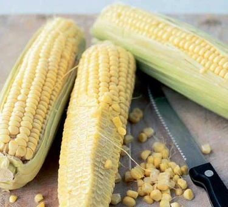

Sweetcorn

What is sweetcorn?
Also known as corn on the cob, sweetcorn is composed of rows of tightly packed golden yellow kernels, growing along a tough central core. When ripe, the kernels are sweet and juicy, and are best cooked simply, with a little butter. Like peas, the natural sugars in the kernels turn to starch quite quickly, which makes the kernels tougher and less sweet, so it should be eaten as fresh as possible.
How to cook sweetcorn
If you just want to heat the sweetcorn to serve on the side of a meal, empty the whole can into a pan and bring it to a boil, then drain the water and serve.When adding sweetcorn to an existing meal, drain the water from the can and then add the sweetcorn to the meal.